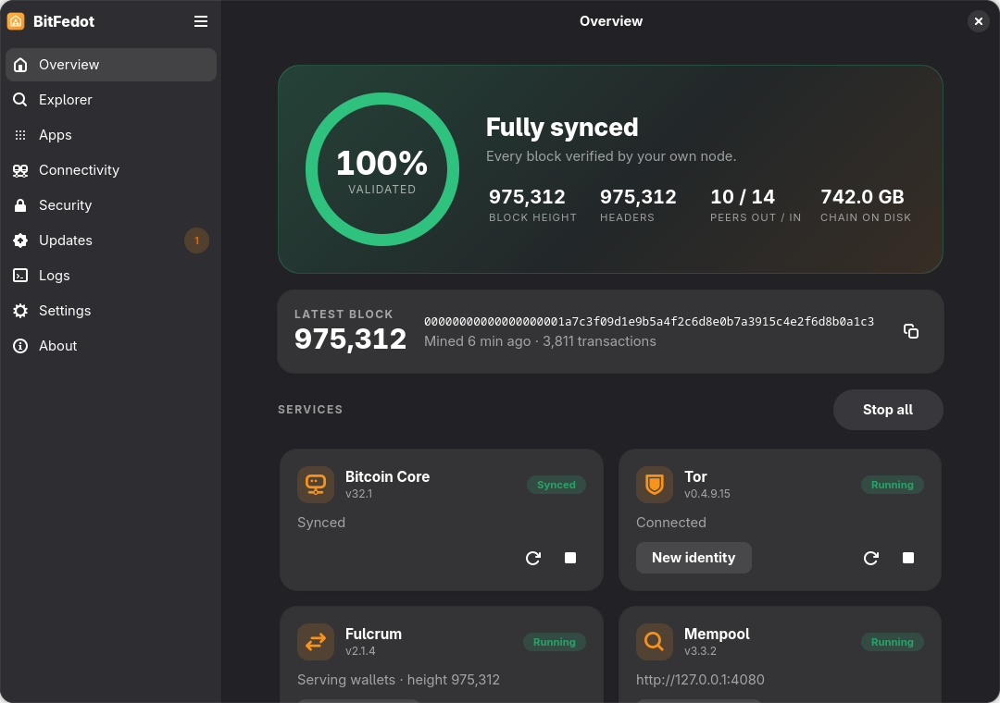
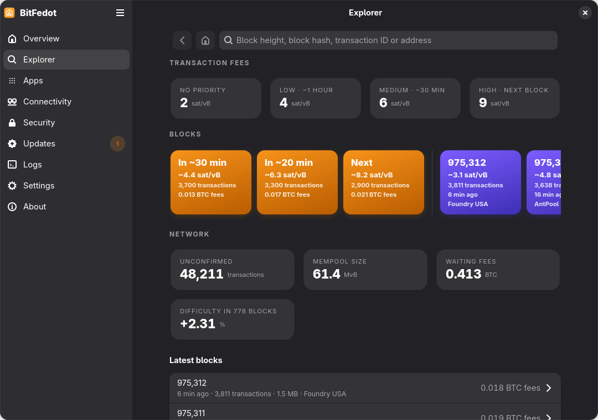
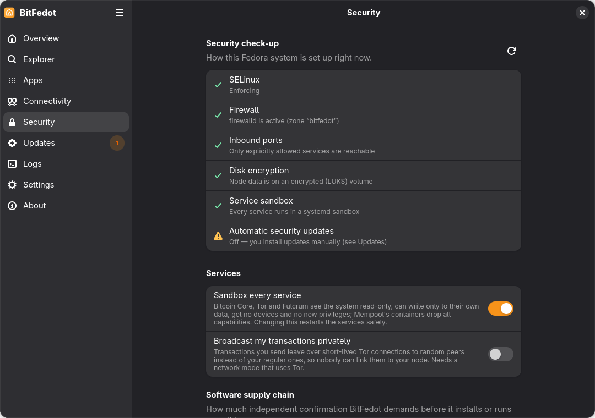
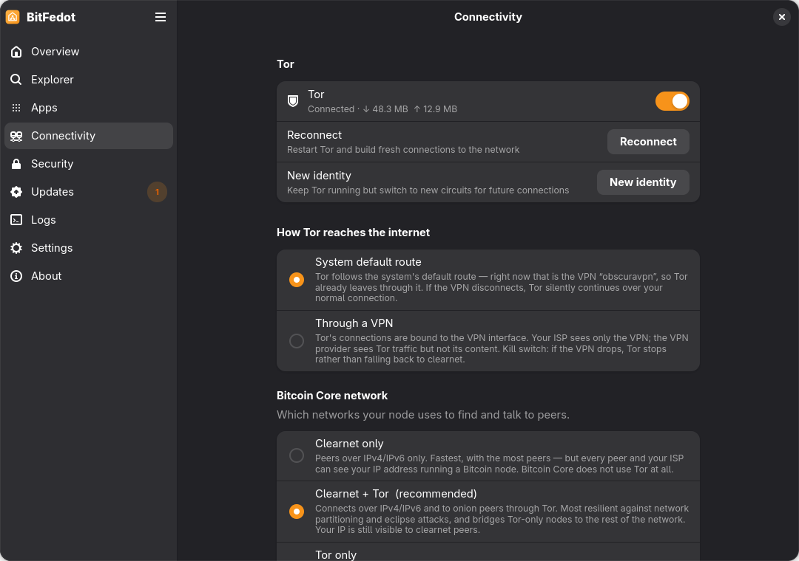
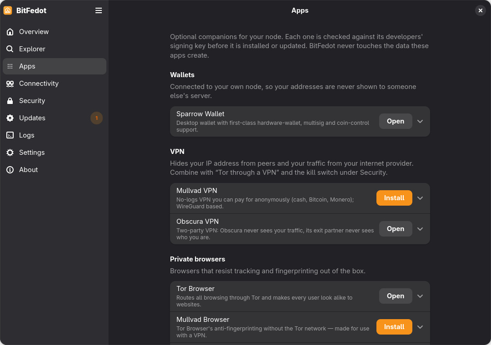
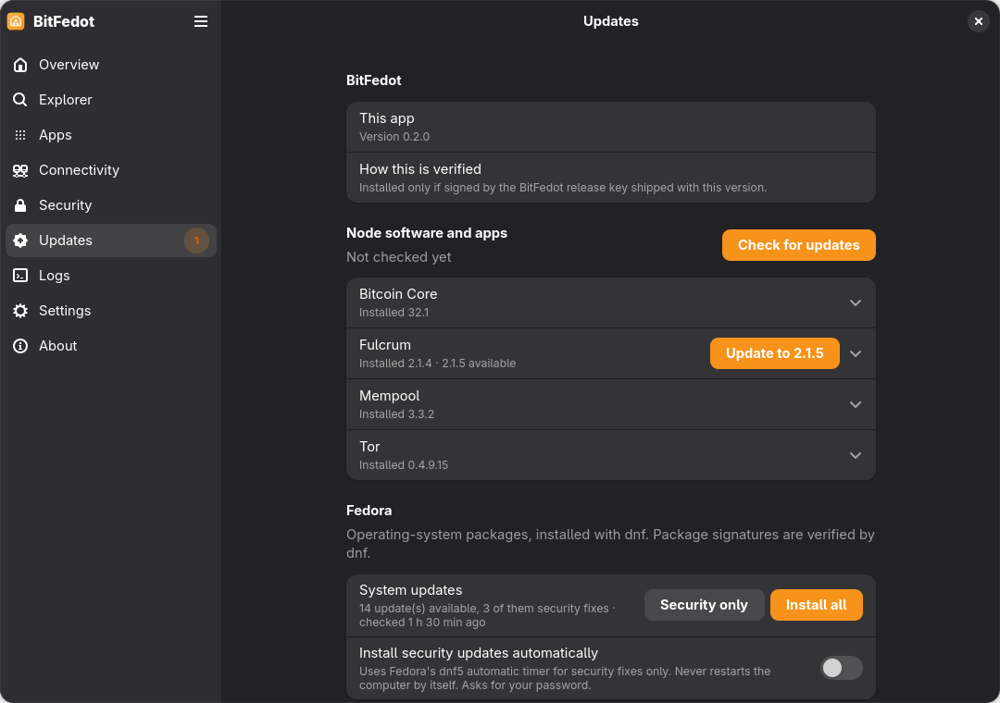
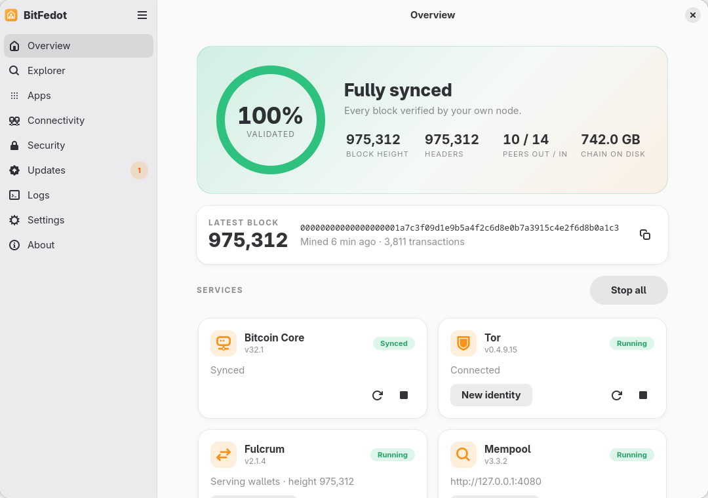

Your own Bitcoin node,
built for Fedora.
BitFedot turns a Fedora computer into a complete, private, hardened Bitcoin stack — Bitcoin Core, Fulcrum, Mempool and Tor — from one native app. No terminal. Every download is checked against its developers' signing keys before it runs.

In 2026, machines started finding Linux bugs faster than people could patch them.
AI-assisted research is turning up kernel vulnerabilities by the hundreds. For anyone who keeps a node — or keys — on a computer, the question that matters is no longer whether a serious bug exists, but how quickly the fix reaches your machine.
That is the platform BitFedot is tailored to. Not “Linux in general”: Fedora specifically — its current kernels, SELinux enforcing out of the box, systemd's sandboxing, firewalld, rootless Podman and dnf's signed packages. BitFedot uses each of them as it is meant to be used, and adds the piece Fedora cannot provide by itself: keeping the system updated from inside the same app that runs your node, with a safe shutdown before every restart.
- The Hacker News, “OpenAI AI Pipeline Generates 948 Linux Root Escalation Exploits in 30-Hour Run”; Phoronix, “OpenAI Finds 948 Local Privilege Escalation Bugs In The Linux Kernel”.
- Wikipedia, “Copy Fail” (CVE-2026-31431): Arch Linux, Fedora and Amazon Linux “had released patches at the time of the disclosure”.
- Fedora Magazine, “How Fedora is Responding to Recent Kernel Vulnerabilities” (May 2026), and its discussion thread.
No distribution is first every time, and BitFedot does not claim Fedora always is. Patch speed varies by bug; check the trackers for the ones you care about.
A full node stack that looks after itself.
Verified installs
Latest stable Bitcoin Core (at least three independent builder signatures required), Fulcrum, Mempool and Tor. One password prompt in total.
Fast sync, honest estimate
Tuned to your RAM and disk. The time remaining is counted in transactions, not blocks, and allows for the slow final stretch.
Tor, your way
Clearnet, clearnet + Tor, Tor only, or everything through Tor — each explained. Tor can be bound to your VPN so it never falls back to clearnet.
Your own explorer
Fees, mempool, blocks, transactions and addresses in a native window, answered by your node. Nobody else sees what you look up.
Fedora hardening
Security check-up, a sandbox around every service, a strict firewall zone, a system-wide VPN kill switch, private transaction broadcast.
Verified companions
Optional: Sparrow wired to your node, Mullvad and Obscura VPN, Tor Browser, Mullvad Browser, LibreWolf, Element, SimpleX.
Updates for everything
Node software, apps, Fedora itself and BitFedot — checked through Tor, verified, installed, restarted in the right order.
Safe stops, always
Services stop dependents-first and are given time to write to disk. Quit asks: run in background, or shut down safely.
From empty disk to private node.
Pick a disk
The wizard checks space, memory and disk type, and tunes the sync for the machine.
Download, verify, install
Releases come from their authors and must pass signature checks against keys pinned in BitFedot.
Sync at full speed
Clearnet, blocks only, a large cache, indexes deferred. Close the window if you like.
Automatic hand-over
When the chain is verified, a small agent switches to the full profile and starts Tor, Fulcrum and Mempool.
Harden and connect
Switch on the firewall zone and kill switch, add a wallet, and reach your node over an onion address.
Everything is a user service
Plain systemd units you can inspect with systemctl --user and journalctl. Nothing of BitFedot's runs as root.
One source of truth
A single settings file; one function renders every config and unit from it and converges the system, idempotently.
Loopback only
Every service listens on 127.0.0.1. The one exception is Bitcoin's peer port, and only if you choose to accept clearnet peers.
No keys in the node
Bitcoin Core runs with its wallet disabled. Your keys live in your wallet — ideally on a hardware device.
Nothing runs until it has been checked.
Every signing key is pinned in the source code — nothing is trusted on first use. A failed check deletes the download and stops.
| Software | What must be true before it is installed or updated |
|---|---|
| Bitcoin Core | Checksums signed by at least 3 independent builders (you can require up to 8); the download must match. |
| Fulcrum · Sparrow | Checksum file signed by the developer's pinned key; the download must match. |
| Tor Browser | Archive signed by the pinned Tor Browser Developers key. |
| Element | Element's signed package repository: release file, index and package hashes all verified. |
| Mullvad · Obscura · LibreWolf | The vendor's RPM repository, set up with a pinned copy of the vendor's key; dnf checks every package. |
| SimpleX | Flatpak from Flathub, added with Flathub's pinned repository key. |
| Mempool | Not signed upstream — so its images are pinned by content hash and run by that hash. |
| Tor · Fedora | Signed packages from the Fedora repositories. |
| BitFedot itself | Only from a release signed with the key the running copy already carries; tested before it is switched in; one-click rollback. |
Why not compile everything locally? Because several independent signatures on one reproducible build are stronger than a single build nobody can compare — and far more reliable. The reasoning is in the README.
Native, explained, and yours.






Public domain. Read it, change it, ship it.
BitFedot is released under The Unlicense: no permission, no attribution, no conditions.
About 6,500 lines of plain Python on GTK 4 — standard library and PyGObject only, nothing from PyPI. The code is arranged so that a person or a coding assistant can pick it up quickly: one file maps the modules and the rules, another has copy-paste recipes, and adding an app is a single data entry.
Standing on shoulders
BitFedot arranges other people's work. First among them: Satoshi Nakamoto — the whitepaper ships with the app and can be saved from its About page.
Bitcoin Core · Fulcrum · Mempool · Tor · Sparrow · Mullvad · Obscura · LibreWolf · Element · SimpleX · Fedora · GNOME · systemd · Podman · GnuPG · curl
Three commands, then a wizard.
# already present on Fedora Workstation sudo dnf install python3-gobject gtk4 libadwaita curl gnupg2 git clone https://github.com/G0SHA256/bitfedot && cd bitfedot ./install.sh # per-user install into ~/.local — no root
Then open BitFedot from the app grid. Just curious? This changes nothing on your system:
python3 -m bitfedot --demo synced
What you need
Fedora 41 or newer, x86_64 or aarch64, about 1.3 TB of free disk (SSD strongly recommended), 8 GB of RAM or more.
Where it stands
Version 0.2, pre-release. A real node runs on it and every part has been exercised against the real upstreams — but it is young. See exactly what has and has not been tested.
Help wanted
Reports from real installs, testing on KDE and aarch64, more verified apps, translations. How to contribute.